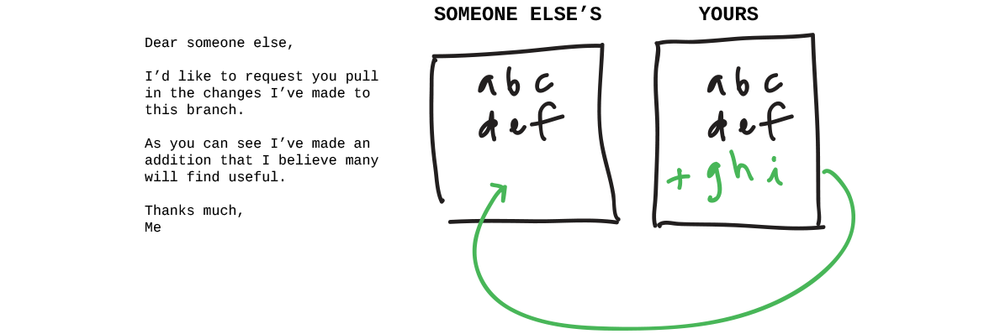

When you make changes and improvements to a project you've forked, often you'll want to (and have intended to from the get-go) send those changes to the maintainer of the original and request that they pull the changes into the original so that everyone can benefit from the updates - that's a pull request.
We want to add you to the list of workshop finishers, so make a pull request to the original: www.github.com/jlord/patchwork.
Visit the original repository you forked on GitHub, in this case http://www.github.com/jlord/patchwork.
Often GitHub will detect if you've pushed a branch to a fork and display it at the top of the original's website. If you see that, you can click Create Pull Request. If not:
You'll now see a page with the details of the pull request you're in the process of submitting. The page shows the commits and changes associated with your pull request. If the original repository has a contribution documentation, GitHub will link to it.
If everything is good, and as you expect it:
High five! You've submitted your pull request, take a few seconds to bask in the moment.
If all is well with your pull request, it will be merged within moments. If it's not merged automatically within a few moments, you'll then likely have some comments from Reporobot on why it couldn't merge it. If so, close your pull request on GitHub.com, make the necessary changes to your branch, push those changes and resubmit your pull request.
git-it verify